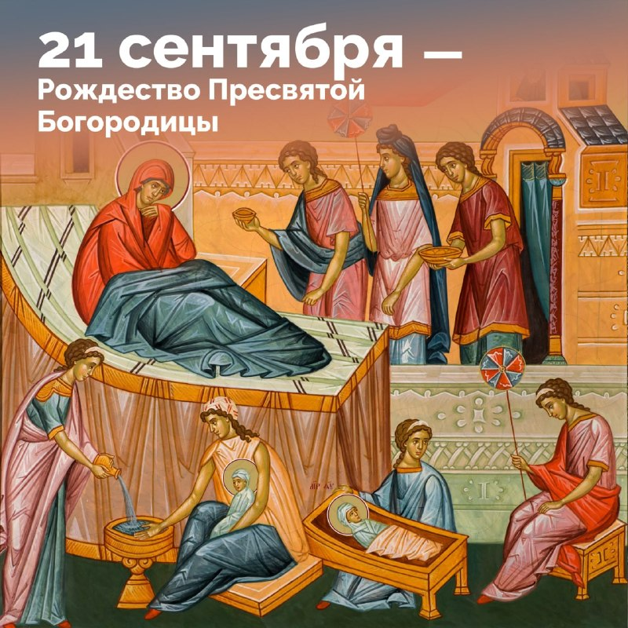
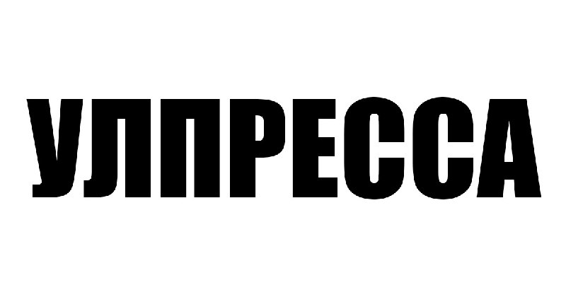
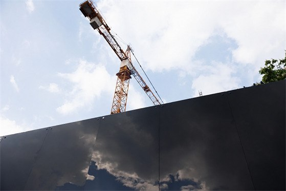
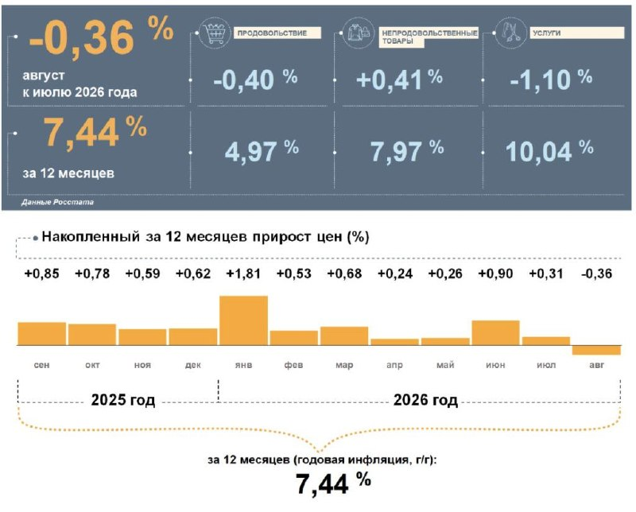
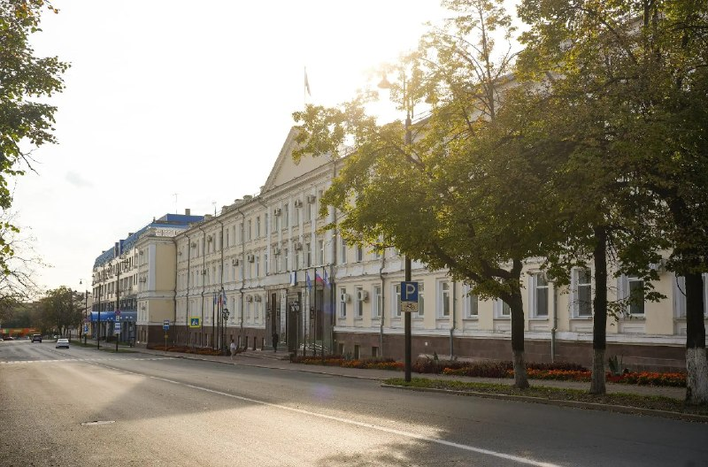

На трассе в Мелекесском районе погиб водитель «Шкоды»
Водитель «Шкоды», 31-летний мужчина, съехал в кювет, автомобиль перевернулся. От полученных травм мужчина скончался в больнице.…
НовостьПо данным источника
РИА Новости выпустило рейтинг регионов по зарплатам: наша область заняла скромное 67-е место из 85. Медиана означает, что ровно половина работающих ульяновцев получает меньше этой суммы.…

Водитель «Шкоды», 31-летний мужчина, съехал в кювет, автомобиль перевернулся. От полученных травм мужчина скончался в больнице.…


Теперь легко можно найти ближайшую заправку на которой есть топливо, либо подписаться на ближайшие к вам бензоколонки и моментально узнавать о поступлении топлива, уведомление о поступлении придет прямо в бота!…

Сохраняйте график их проведения себе и делитесь с близкими: 26 сентября — Засвияжский район, ТК «Звезда» 3 октября — Ленинский район, улица Минаева…

В Ленинском и Заволжском районах работы завершены, следующими идут Засвияжский и Железнодорожный. Сегодня опашка ведётся в деревне Погребы.…


Цены традиционно будут в среднем на 15-20% ниже магазинных. Качество продукции проконтролируют специалисты Агентства ветеринарии.…


А ещё пять раз будут трёхдневные выходные: ▪️ в феврале: с 21 по 23 февраля; ▪️ в марте: с 6 по 8 марта; ▪️ дважды в мае: с 1 по 3 мая и с 8 по 10 мая; ▪️ в июне: с 12 по 14 июня.…

Какие дома и насколько вновь остались без воды? Ресурсники никого не поставили в известность.…

После обработки 95% голосов — «Единая Россия» набирает 57,83% на выборах в Госдуму.…

Во дворе многоквартирного дома № 14 по улице Шолмова разгорелся острый дворовый конфликт.…

Пешеходная зона на территории рынка возле «Универсама» (улица Камышинская, 19Б) превратилась в полосу препятствий.…

Ни у одного губернатора в мире не фиксировали подобных показателей поддержки — 99,85% Предыдущие рекорды также принадлежали ему: на выборах в 2016 году политик набрал 97,94% голосов, а в 2021-м — 99,7%.…

Местные жители пожаловались в редакцию на хаос между торговыми павильонами.…

На оживленном пешеходном тротуаре возле дома № 15 по улице Камышинской образовался глубокий сквозной провал.…

Под тонким слоем асфальта образовалась глубокая пустота, куда легко может провалиться ребенок.…

Медаль — в финале отдельных видов, упражнение с мячом. В турнире участвовали гимнастки из 10 стран. Тренирует Беспалову Татьяна Грибкова.…

В свободное от ковра время руководитель федерации прогулялся по Сараево и посмотрел, в каком состоянии сейчас находятся объекты зимней Олимпиады 1984 года.…

Предание гласит, что Иоаким и Анна дожили до преклонных лет бездетными.…

Решение приняли после изучения аварийности на этом участке по рекомендации Болдакина. Работы выполнили специалисты «Правого берега».


Горе рабочие и совершенно никакого муниципального…


Уже готовы площадь у ДК «Руслан» и сквер «Губернаторский».…

Пусть каждый новый сезон приносит только хорошие эмоции и новые достижения! 🎉 — поздравляем!

Ребёнок в игре кажется лёгкой мишенью: он хочет прокачать персонажа, получить редкий предмет, поверить «другу по команде»……

Среди дисциплин — подъём бревна, становая тяга, фермерская прогулка и перенос коромысла.…


Региональное отделение Центробанка назвало ключевые драйверы роста цен за прошедший год.…

Здание расположится в уютном зеленом районе. Но помимо природной среды, здесь создана и комфортная социальная.…

Центробанк назвал главные за год драйверы инфляции в регионе.…

Соответствующий проект постановления опубликован на сайте правительства Ульяновской области. Размер выплаты составляет 200 тысяч рублей.…


Благоустроены площади у ДК «Руслан» и сквер «Губернаторский».…

Ничего по этому фильтру в ленте нет — показать все материалы.
Возник 15.09, пик 15.09 — сюжет держали 25 источников. Полная дуга — в недельнике.
«Якушев выпустил новый агитационный ролик, с которым идет в Госдуму Подписывайтесь | Косаринова в…».